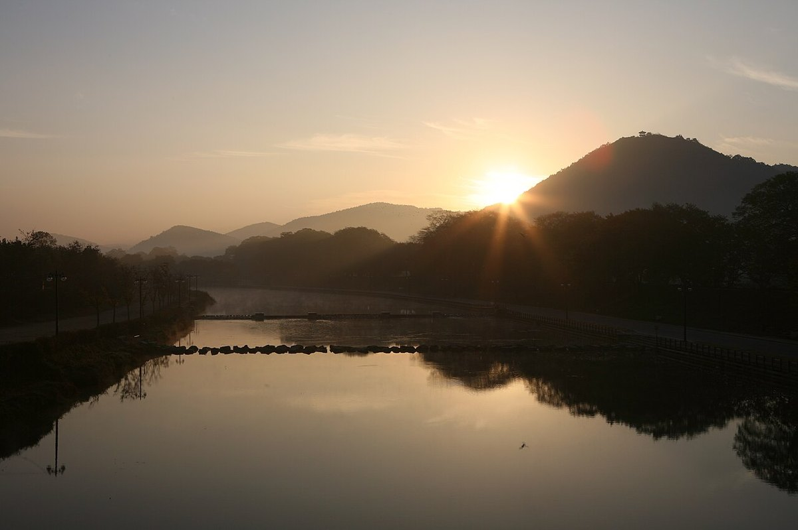
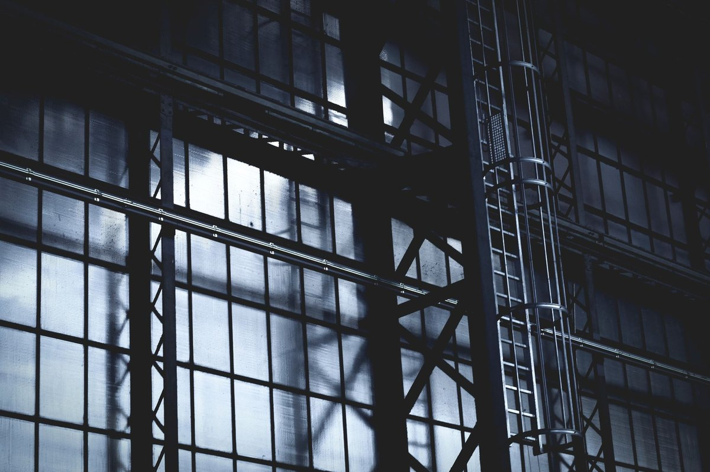
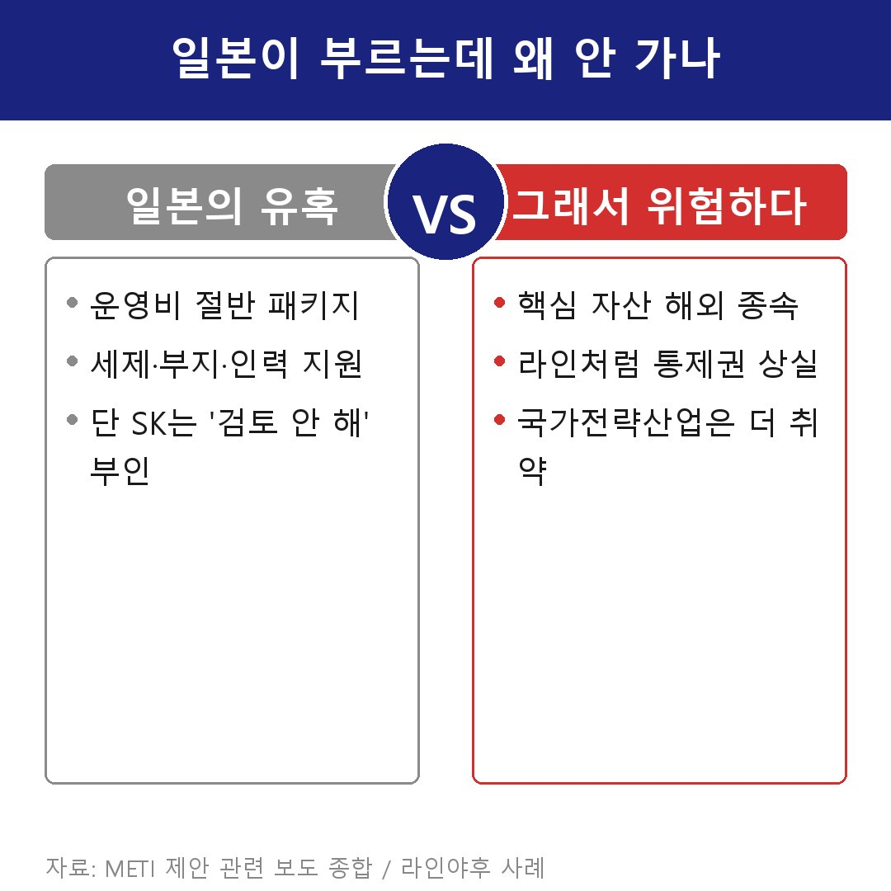

물도 없다는데 왜 호남 반도체 공장? 일본 대안론의 맹점
오늘 호남에 반도체 공장을 짓겠다는 발표가 나온다고 한다. 1000조 원, 이재용 회장에 최태원 회장까지 한자리에 모인다.
다들 대박 호재라고 하는데, 댓글은 둘로 갈렸다. "호남은 물도 부족한데 왜 거기냐", 그리고 "차라리 일본이 돈 대준다는데 거기 가서 싸게 짓지."

앞엣것은 따져볼 만한 얘기다. 뒤엣것은 사실 좀 위험한 소리다. 왜 그런지 풀어보겠다.
반도체 공장은 아무 데나 못 짓는다
땅만 넓다고 들어서는 게 아니다. 하루에 어마어마한 물을 쓰고, 그것도 아주 깨끗한 물이어야 한다. 도시 하나가 쓸 만큼의 전기를 끌어다 쓴다. 땅도 넓고 평평하고 단단해야 한다. 미세한 진동에도 불량이 나니까.

그래서 입지 싸움은 늘 물과 전기를 댈 수 있느냐로 모인다. 호남 논란도 결국 여기서 터졌다.
호남에 물이 없다는 말, 진짜일까
반대쪽 말은 이렇다. 호남은 산업용수가 부족하다, 삼성과 SK가 물 없는 데 공장을 짓겠나.
정부 쪽은 정면으로 받는다. 영산강과 섬진강 일대 댐에 가둔 물이 적지 않고, 관리만 제대로 하면 하루 100만 톤 안팎의 산업용수도 댈 수 있다는 것이다. 물이 없는 게 아니라 그동안 농사용으로만 쓰며 안 깔아놨을 뿐이라는 얘기다.
어느 쪽이 맞는지는 발표 뒤 구체적인 용수 계획이 나와야 갈린다. 아직은 양쪽 주장이 부딪치는 단계다.
그럴 거면 일본 가지라는 말은 어디서 나왔나
여기서 꼭 나오는 말이 있다. 그럴 거면 일본 가서 짓지. 그런데 이건 우리 기업이 흘린 얘기가 아니다.
올해 2월 일본 언론이 SK하이닉스가 일본 지자체에 부지를 알아본 것 같다고 보도하면서 퍼진 말이다. SK는 곧바로 검토한 적 없다고 부인했다. 지금 SK가 실제로 돈을 넣는 곳은 일본이 아니라 미국이다.
물론 일본 정부가 손짓하는 건 사실이다. 세금 깎고 부지에 인력까지 묶어서 공장 운영비를 절반까지 낮춰주겠다며 몇 년째 우리 기업을 부르고 있다. 조건만 보면 솔깃하다.
그런데도 기업은 선을 긋는다. 왜일까.

라인을 떠올려 보면 답이 나온다
네이버가 키운 라인은 일본에서 국민 메신저가 됐다. 그러자 몇 년 전 일본 정부가 개인정보 유출을 빌미로 네이버 지분을 줄이라며 행정지도를 내렸다.
자본은 그대로 둔 채로도, 운영과 기술의 주도권은 슬그머니 일본 쪽으로 넘어갔다. 핵심 자산을 남의 나라 땅에 두면 그 나라가 법과 행정으로 목줄을 쥘 수 있다는 걸 보여준 사건이다.
라인이 그랬는데, 국가 전략 산업인 반도체는 더하면 더했지 덜하지 않다. 싸게 지어준다는 말에 핵심 공장을 통째로 넘겼다가 제2의 라인이 되는 순간, 그건 돈 몇 푼으로 되살 수 없는 걸 잃는 거다.
그래서 결론은
왜 하필 호남이냐는 따져볼 수 있다. 하지만 차라리 일본은 답이 아니다.
호남이 됐든 충청이 됐든, 핵심은 이 공장을 국내에 둔다는 데 있다. 어느 지역이냐는 그다음 문제다.
물론 오늘 발표는 끝이 아니라 시작이다. 후보지도 투자 규모도 오후에야 윤곽이 나온다. 짓겠다는 말과 실제로 첫 삽을 뜨는 건 또 다른 얘기다. 그건 다음 글에서 이어가겠다.
#호남반도체공장 #호남반도체
출처: 대통령실·기후에너지부 발표 · 일본 닛케이 보도 · 언론 보도 종합
오늘 오후 2시 청와대 영빈관에서 이재명 대통령 주재 '3대 메가프로젝트 국민보고회'가 열렸고, 이재용·최태원 회장이 직접 참석한 것으로 전해진다. 보도를 종합하면 호남권 투자만 700조 원 안팎, AI 데이터센터까지 더하면 1000조 원을 넘어설 것으로 거론된다. 후보지로는 광주 첨단3지구·군공항, 전남 해남 솔라시도가 유력하게 오르내린다. 다만 확정 부지와 기업별 금액은 발표 직후라 아직 유동적이다.